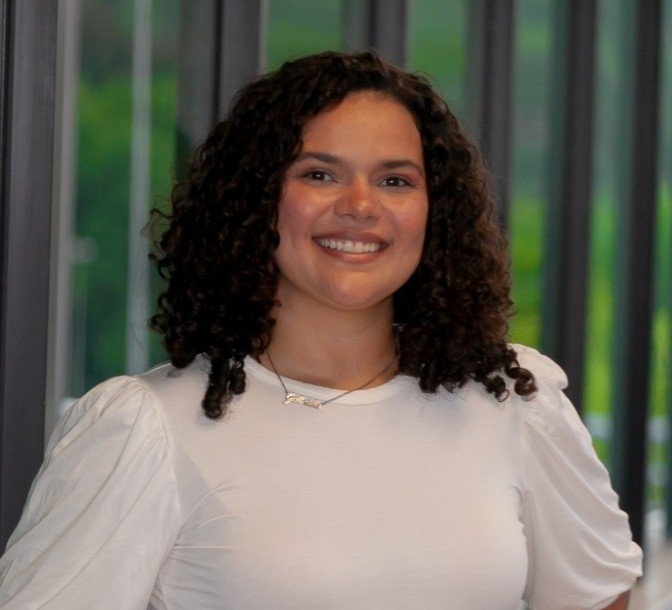
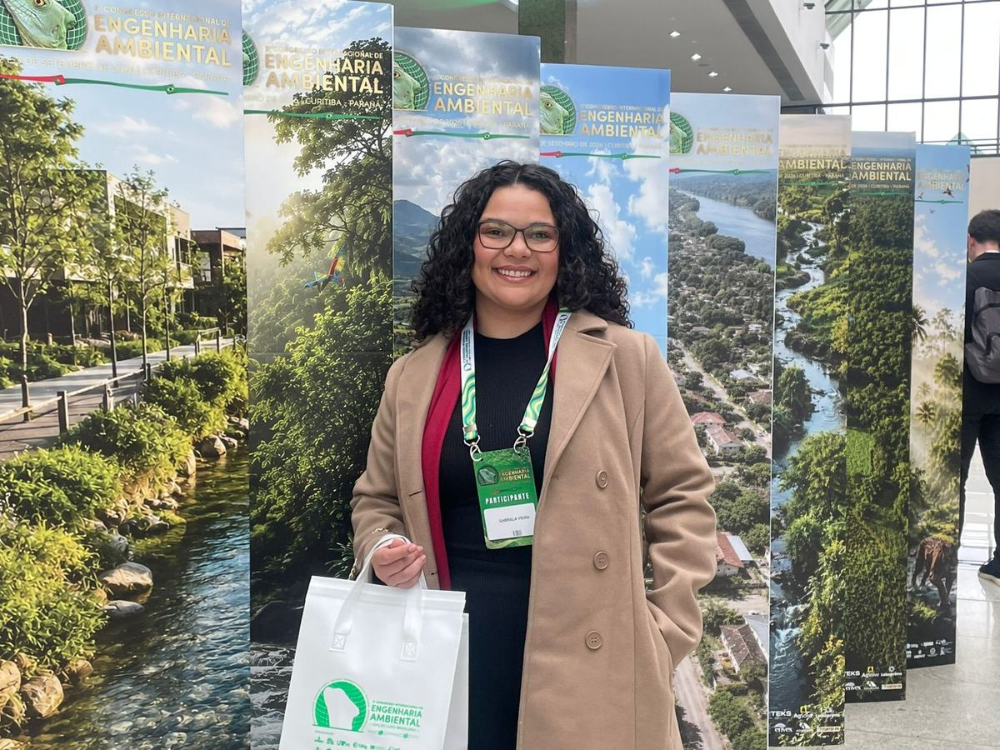
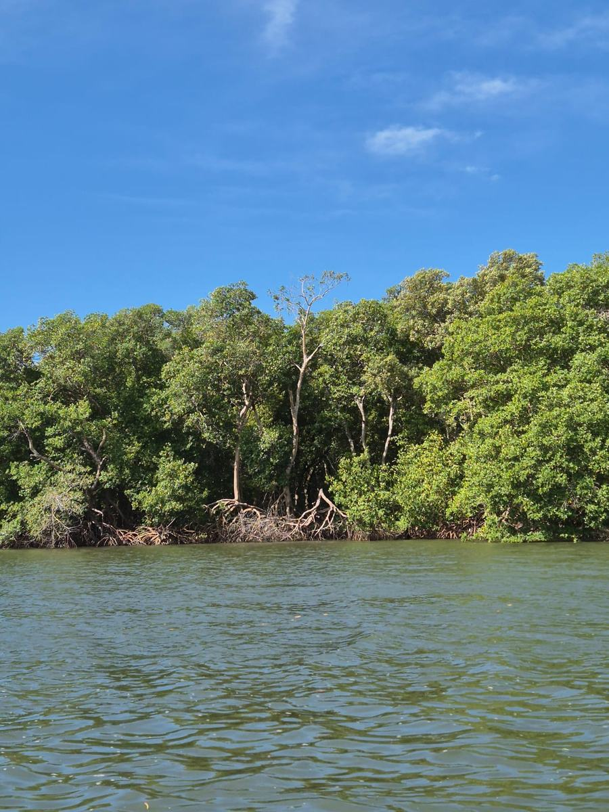
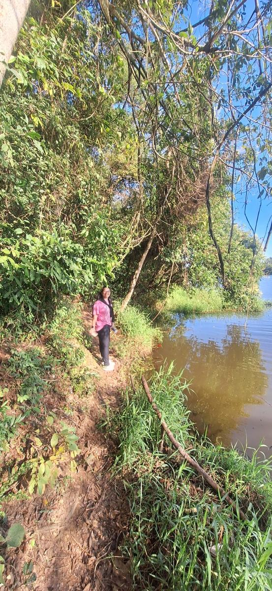
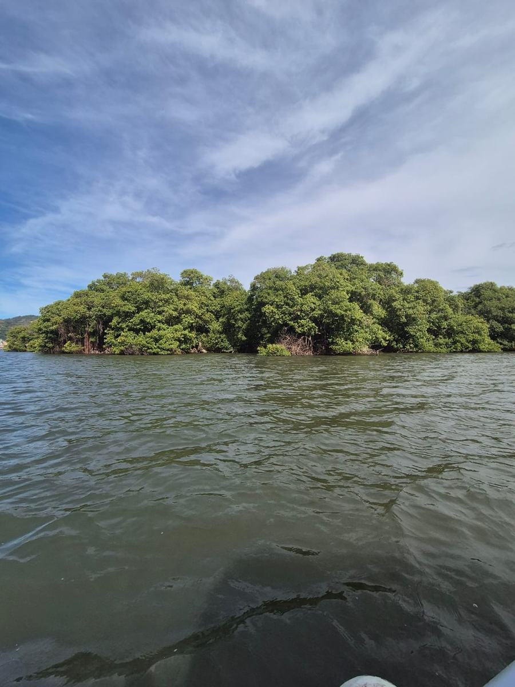
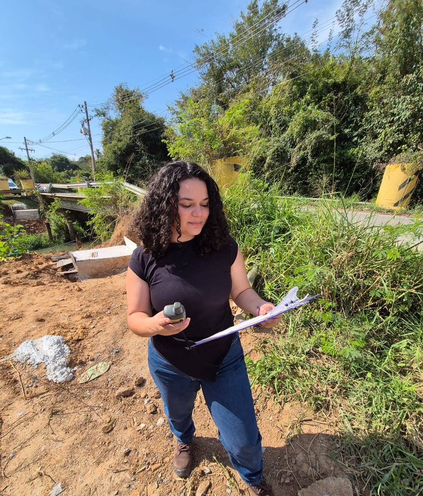
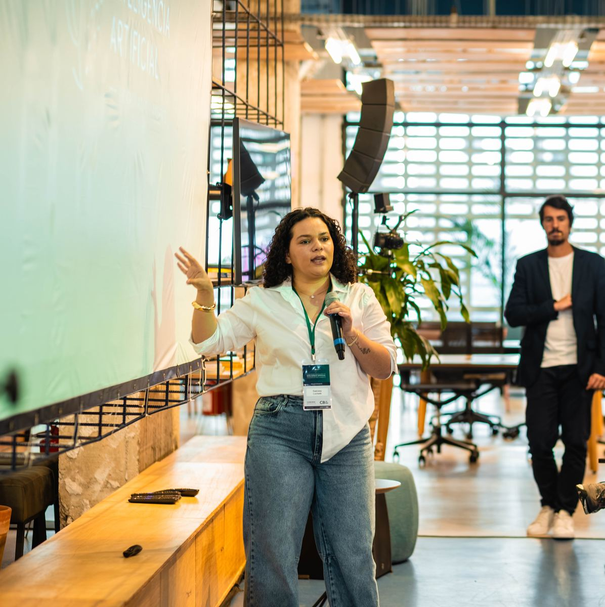
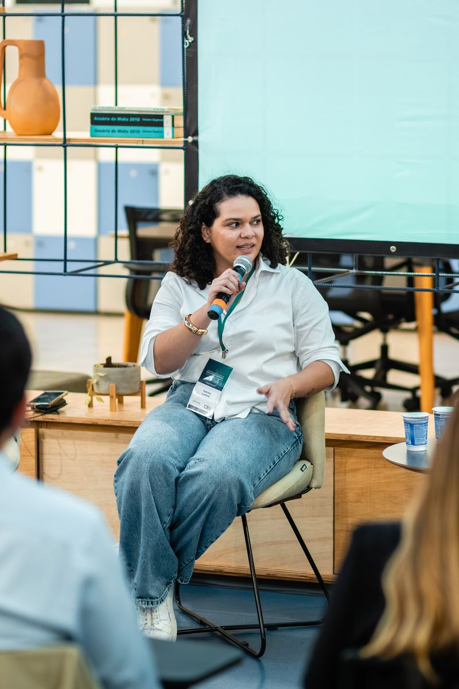
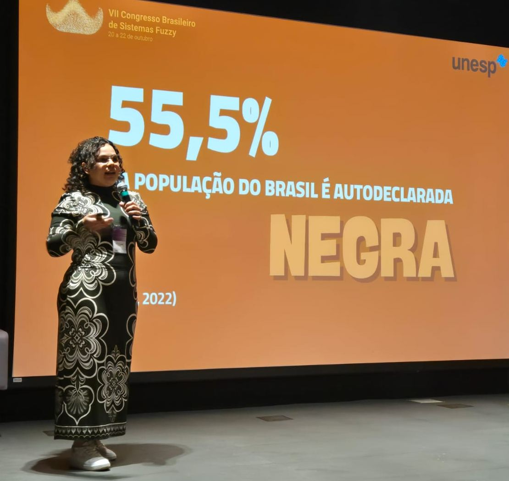

MBA in Artificial Intelligence Applied to the Environment
Courses: Computer Vision and AI for Geospatial Analysis; IoT and Real-Time Sensor Networks.
Research and technical solutions for complex environmental challenges. I work in forensic expertise, consulting and research, combining technical knowledge and artificial intelligence to develop environmental solutions.

My work brings together scientific knowledge and technical practice in the environmental field, focusing on the analysis of complex problems and on data-driven solutions.
I work with remote sensing, geoprocessing and environmental modelling, using geospatial data, artificial neural networks and programming in studies on climate change, forest conservation and carbon markets.
As an environmental forensic expert, I prepare judicial and extrajudicial technical reports and opinions on environmental damage and liabilities, licensing and environmental compliance.




Feasible, ethical and sustainable environmental solutions for companies, public agencies and law firms, from licensing to forensic expertise.

São Paulo State University (UNESP)
Urban carbon-flux modelling with artificial neural networks validated by eddy covariance: applications to environmental governance and climate-inequality analysis.
São Paulo State University (UNESP)
Estimating carbon-credit potential from avoided deforestation and forest degradation (REDD+) using artificial neural networks. Read the dissertation (PT)
University of Sorocaba (UNISO)
Ecological-Economic Zoning of the Sorocaba Metropolitan Region: scenario overlay as a public-management tool. Read the dissertation (PT)
Senac University Centre, São Paulo
São Paulo State University (UNESP)
GL Engenharia Ambiental
São Paulo State Court of Justice · expert assistant to the São Paulo State Treasury
CarbonSpace · Ireland (remote)
Geospatial analysis for carbon and climate projects: remote sensing, land-use monitoring and support for conservation initiatives.
Chemyunion Química
Sustainability reports (2022 and 2023) and solid waste management programme.
Raízen Combustíveis S.A.
Institute for Technological Research (IPT-SP) · FIPT fellowship
Databases for contaminated-site management.
Courses: Computer Vision and AI for Geospatial Analysis; IoT and Real-Time Sensor Networks.
Department of Environmental Engineering: Geographic Information Systems; Geoprocessing; Topics in Environmental Auditing; Environmental Legislation.
Supervision of an undergraduate research project on dengue-susceptible areas in Sorocaba (UNESP). Evaluator at the UNESP Undergraduate Research Congress (CIC) in 2025 and 2026, BEng thesis examination committee (UNESP, 2025) and judging committee of BRAGANTEC science fair, IFSP (2025 and 2026).



Book chapter
Índice de Racismo Ambiental: proposta metodológica a partir da lógica fuzzy
Vieira, G. S. L.; Souza, C. B. F.; Silva, D. P.; Mota Junior, V. D.; Roveda, J. A. F.; Roveda, S. R. M. M.
Livro de Resumos do VII Congresso Brasileiro de Sistemas Fuzzy (CBSF 2025). Campinas: CNPEM / Aptor Software, v. 7, p. 58–64.
Full paper
Especificação de um experimento de ciência de dados para análise de áreas contaminadas
Quille, R. V. E.; Vieira, G. S. L.; Freitas, L. G.; Corrêa, P. L. P.; Souza, S. N. A.; Barbosa, A. M.; Almeida, F. V.
Anais do WCAMA 2025, Maceió/AL. Porto Alegre: Sociedade Brasileira de Computação, p. 316–325.
Extended abstract
Dataset de poços de monitoramento de gases da USP Leste
Quille, R. V. E.; Vieira, G. S. L.; Freitas, L. G.; Corrêa, P. L. P.; Souza, S. N. A.; Barbosa, A. M.; Almeida, F. V.
Anais do WCAMA 2025, Maceió/AL. Porto Alegre: Sociedade Brasileira de Computação, p. 352–355.
Abstract
Proposta simplificada do Zoneamento Ecológico-Econômico da Região Metropolitana de Sorocaba-SP: sobreposição de cenários como ferramenta de gestão pública
Vieira, G. S. L.; Lourenço, R. W.; Yoshida, V. M. H.
1º Encontro de Pesquisadores do Observatório de Desenvolvimento da RMS (EPO). Sorocaba: Uniso, v. 1, p. 14.
Book chapter
Avaliação dos efeitos da degradação vegetal no balanço de energia na APA de Itupararanga para 2015, 2019 e 2023
Toledo, M. V. L.; Vieira, G. S. L.; Lourenço, R. W.
Extremos climáticos: impactos atuais e riscos futuros. Belo Horizonte: Synapse Editora, p. 107–117.
Full paper
Métodos e técnicas de mapeamento de mudanças do uso da terra e seus impactos socioambientais
Vieira, G. S. L.; Lourenço, R. W.; Yoshida, V. M. H.
Anais do Congresso Nacional de Meio Ambiente de Poços de Caldas, v. 7.
Full paper
Análise temporal da autocorrelação espacial do Índice Paulista de Desenvolvimento Municipal para os anos de 2014 e 2022
Vieira, G. S. L.; Melare, A. V. S.; Santos, H. G.; Silva, D. C. C. E.
Livro de Memórias do Sustentare & WIPIS 2024, Campinas.
Abstract
Mapeamento do uso da terra e análise das mudanças na Região Metropolitana de Sorocaba
Vieira, G. S. L.; Yoshida, V. M. H.; Lourenço, R. W.
1º Colóquio Interdisciplinar PPGCF e PPGPTA, Sorocaba-SP.
Technical note
Proposta de Índice de Racismo Ambiental a partir do modelo de inferência fuzzy
Vieira, G. S. L.; Souza, C. B. F.; Silva, D. P.; Roveda, J. A. F.; Roveda, S. R. M. M.; Mota Junior, V. D.
Sorocaba: Instituto Dacor.
Full paper
A educação ambiental como ferramenta de conscientização ambiental para escolares da rede pública
Vieira, G. S. L.; Simas, S. H. B. E.; Lourenço, R. W.
9º Congresso Brasileiro de Extensão Universitária (CBEU), Belo Horizonte, v. 9.
Extended abstract
Benefícios da ciência dos dados aplicada à revitalização de brownfields no contexto de cidades inteligentes e sustentáveis
Vieira, G. S. L.; Quille, R. V. E.; Freitas, L. G.
Anais do Simpósio Brasileiro Online de Gestão Urbana, Bauru, v. 4.
Titles are shown in the original Portuguese. Full list on my Lattes CV and ORCID.
Interviews and news stories about my research (in Portuguese).
Forensic expertise, consulting, research partnerships, lectures and talks.